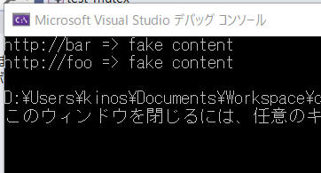

スレッド間で共有されるリソースに対して複数のスレッドから同時に処理を行うと、プログラムの整合性が壊れてしまいます。これを防ぐために共有リソースに対する処理を適切に制御してプログラムの整合性を保つことを
"排他制御" といいます。
ミューテックスと呼ばれる種類のクラスによって共有リソースへアクセスできるスレッドを制限して、排他制御を実現できます。
std::lock_guard クラスは、リソースの排他的なロックをシンプルに管理するためのクラスです。テンプレート引数には、std::mutexクラスのような、 lock() / unlock() メンバ関数を持つクラスを指定できます。
コンストラクタの第一引数には、ミューテックスオブジェクトの参照を渡します。コンストラクタ内では、受け取ったオブジェクトに対して、 lock() メンバ関数を呼び出してロックを取得します。
すでにロックが取得されているオブジェクトを std::lock_guard クラスで管理したい場合は、コンストラクタの第２仮引数に std::adopt_lock 変数を渡して、 lock() メンバ関数を呼び出さないように指定できます。
デストラクタが呼び出されると、管理しているオブジェクトの unlock() メンバ関数を呼び出し、ロックを解除します。
lock_guard クラスはコピー可能ではありません。
[概要]
mutex と lock_guard を使って、シンプルな排他処理を行うプログラムを作成してみます。
[環境]
| コンパイラ : | Visual Studio 2019 pro., | Version 16.6.2 |
| OS: | Windows10 home, | Version 1909 |
[プログラムソース]
#include <iostream> // cout
#include <map> // map
#include <string> // string
#include <chrono> // chrono::seconds
#include <thread> // thread, join
#include <mutex> // mutex, lock_guard
std::map<std::string, std::string> g_pages;
std::mutex g_pages_mutex;
void save_page(const std::string& url)
{
// ページの読み込みに時間がかかるのをシミュレートしています。
std::this_thread::sleep_for(std::chrono::seconds(2));
std::string result = "fake content";
// ミューテックスをロックして g_pages にアクセスします。
std::lock_guard<std::mutex> guard(g_pages_mutex);
g_pages[url] = result;
}
int main()
{
std::thread t1(save_page, "http://foo");
std::thread t2(save_page, "http://bar");
t1.join();
t2.join();
// スレッドが join 済みであるため、ロックなしで g_pages にアクセスしても安全です。
for (const auto& pair : g_pages) {
std::cout << pair.first << " => " << pair.second << '\n';
}
}
[実行結果]

[概要]
[環境]
| コンパイラ : | Visual Studio 2019 pro., | Version 16.6.2 |
| OS: | Windows10 home, | Version 1909 |
[作成結果] 作成したプログラムの様子を動画で以下に示します。
[プログラムソース "***.cpp"]
サンプルプログラム ダウンロード
記載：